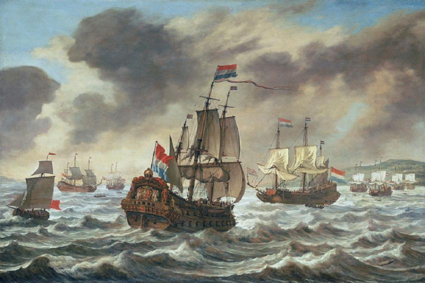

Por que os holandeses invadiram o Brasil?
A Holanda participava diretamente no negócio açucareiro do Brasil, eram eles que financiavam o desenvolvimento do empreendimento aqui e contribuíam com o refino e com a comercialização do açúcar na Europa. Contudo, essa relação sofreu grandes transformações com a crise da dinastia de Avis em Portugal no final do século XVI. Essa crise foi causada pela morte do Rei de Portugal, D. Henrique, e não deixou herdeiros diretos.
Uma competição pelo cargo ocorreu e finalizou com a coroação do Rei da Espanha, Filipe II, como Rei de Portugal. Assim, essa unificação ficou conhecida como União Ibérica. O fato era que a Espanha estava em guerra contra a Holanda e isso foi a causa das profundas modificações na relação entre Holanda e Portugal.

Como foi a invasão?
O que causou a decadência da colônia holandesa?